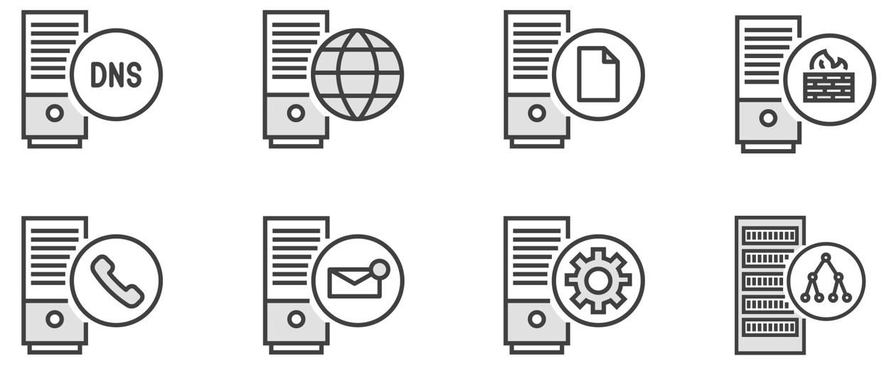
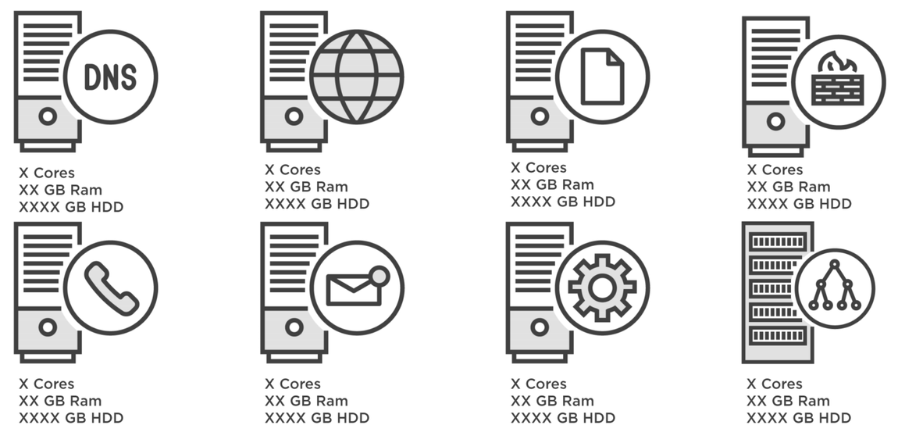
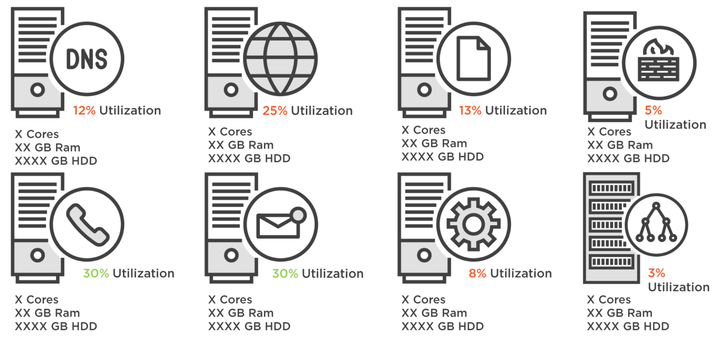
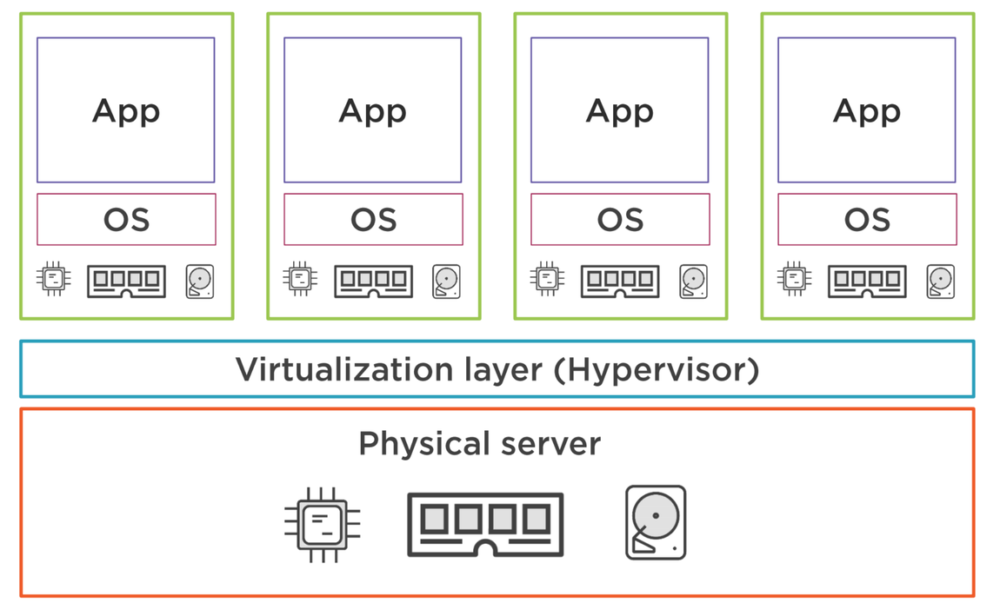
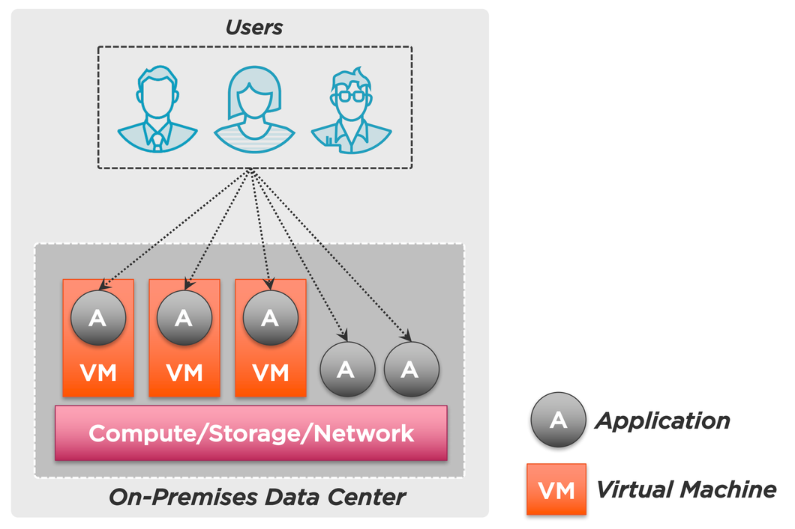
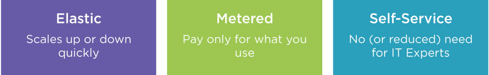
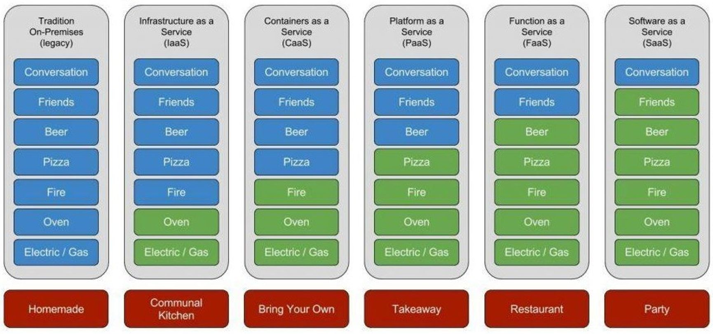
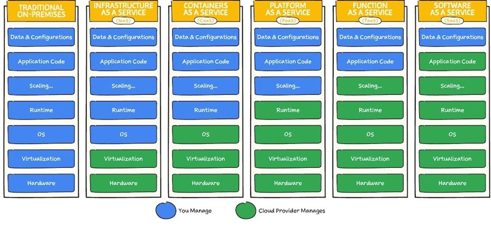

<!DOCTYPE html>
<html lang="en">
  <head>
    <meta charset="utf-8" />
    <meta name="viewport" content="width=device-width, initial-scale=1.0, maximum-scale=1.0, user-scalable=no" />

    <title></title>
    <link rel="stylesheet" href="dist/reveal.css" />
    <link rel="stylesheet" href="dist/theme/moon.css" id="theme" />
    <link rel="stylesheet" href="plugin/highlight/zenburn.css" />
	<link rel="stylesheet" href="css/layout.css" />
	<link rel="stylesheet" href="plugin/customcontrols/style.css">


    <script defer src="dist/fontawesome/all.min.js"></script>

	<script type="text/javascript">
		var forgetPop = true;
		function onPopState(event) {
			if(forgetPop){
				forgetPop = false;
			} else {
				parent.postMessage(event.target.location.href, "app://obsidian.md");
			}
        }
		window.onpopstate = onPopState;
		window.onmessage = event => {
			if(event.data == "reload"){
				window.document.location.reload();
			}
			forgetPop = true;
		}

		function fitElements(){
			const itemsToFit = document.getElementsByClassName('fitText');
			for (const item in itemsToFit) {
				if (Object.hasOwnProperty.call(itemsToFit, item)) {
					var element = itemsToFit[item];
					fitElement(element,1, 1000);
					element.classList.remove('fitText');
				}
			}
		}

		function fitElement(element, start, end){

			let size = (end + start) / 2;
			element.style.fontSize = `${size}px`;

			if(Math.abs(start - end) < 1){
				while(element.scrollHeight > element.offsetHeight){
					size--;
					element.style.fontSize = `${size}px`;
				}
				return;
			}

			if(element.scrollHeight > element.offsetHeight){
				fitElement(element, start, size);
			} else {
				fitElement(element, size, end);
			}		
		}


		document.onreadystatechange = () => {
			fitElements();
			if (document.readyState === 'complete') {
				if (window.location.href.indexOf("?export") != -1){
					parent.postMessage(event.target.location.href, "app://obsidian.md");
				}
				if (window.location.href.indexOf("print-pdf") != -1){
					let stateCheck = setInterval(() => {
						clearInterval(stateCheck);
						window.print();
					}, 250);
				}
			}
	};


        </script>
  </head>
  <body>
    <div class="reveal">
      <div class="slides"><section  data-markdown><script type="text/template"><!-- .slide: class="drop" -->
<div class="" style="position: absolute; left: 0px; top: 0px; height: 700px; width: 960px; min-height: 700px; display: flex; flex-direction: column; align-items: center; justify-content: center" absolute="true">

# Modul 346 
## Woche 2
</div></script></section><section  data-markdown><script type="text/template"><!-- .slide: class="drop" -->
<div class="" style="position: absolute; left: 0px; top: 0px; height: 700px; width: 960px; min-height: 700px; display: flex; flex-direction: column; align-items: center; justify-content: center" absolute="true">

## Prolog: Kernkompetenz einer Firma

- &shy;<!-- .element: class="fragment" data-fragment-index="1" -->Einzigartige Kombination aus Wissen, Fähigkeiten und Technologien, die ein Unternehmen von der Konkurrenz abhebt.
- &shy;<!-- .element: class="fragment" data-fragment-index="2" -->Grundlage für die Entwicklung neuer Produkte/Dienstleistungen.
- &shy;<!-- .element: class="fragment" data-fragment-index="3" -->Vermeidung von Verzettelung: Konzentration auf das, was das Unternehmen am besten kann!
</div></script></section><section  data-markdown><script type="text/template"><!-- .slide: class="drop" -->
<div class="" style="position: absolute; left: 0px; top: 0px; height: 700px; width: 960px; min-height: 700px; display: flex; flex-direction: column; align-items: center; justify-content: center" absolute="true">

### Strategie aus Kernkompetenz

**"Eine starke Kernkompetenz ist wie ein Leuchtturm, der den Weg durch die turbulenten Gewässer des Marktes weist und sicherstellt, dass das Unternehmen auf Kurs bleibt.”**

- &shy;<!-- .element: class="fragment" data-fragment-index="1" -->Beispiel: Bäckerei
- &shy;<!-- .element: class="fragment" data-fragment-index="2" -->Was ist die Kernkompetenz deines Unternehmens? 
- &shy;<!-- .element: class="fragment" data-fragment-index="3" -->Wie würdest du sie in Worte fassen?
</div></script></section><section  data-markdown><script type="text/template"><!-- .slide: class="drop" -->
<div class="" style="position: absolute; left: 0px; top: 0px; height: 700px; width: 960px; min-height: 700px; display: flex; flex-direction: column; align-items: center; justify-content: center" absolute="true">

### Gehört der Betrieb eines Rechenzentrums zu den Kernkompetenzen deines Unternehmens?

- &shy;<!-- .element: class="fragment" data-fragment-index="1" -->**Die Antwort lautet: NEIN !!!!** 
- &shy;<!-- .element: class="fragment" data-fragment-index="2" -->(in den allermeisten Fällen)
</div></script></section><section  data-markdown><script type="text/template"><!-- .slide: class="drop" -->
<div class="" style="position: absolute; left: 0px; top: 0px; height: 700px; width: 960px; min-height: 700px; display: flex; flex-direction: column; align-items: center; justify-content: center" absolute="true">

## Total Cost of Ownership (TCO)

**TCO ist eine umfassende Kostenanalyse, die alle direkten und indirekten Kosten über die gesamte Lebensdauer eines Servers oder einer Serverinfrastruktur erfasst.**
</div></script></section><section  data-markdown><script type="text/template"><!-- .slide: class="drop" -->
<div class="" style="position: absolute; left: 0px; top: 0px; height: 700px; width: 960px; min-height: 700px; display: flex; flex-direction: column; align-items: center; justify-content: center" absolute="true">

## Direkte Kosten
- &shy;<!-- .element: class="fragment" data-fragment-index="1" -->Anschaffungskosten für Hardware und Software
- &shy;<!-- .element: class="fragment" data-fragment-index="2" -->Kosten für Installation
- &shy;<!-- .element: class="fragment" data-fragment-index="3" -->Betriebskosten: Strom, Kühlung, Personal für den Betrieb
</div></script></section><section  data-markdown><script type="text/template"><!-- .slide: class="drop" -->
<div class="" style="position: absolute; left: 0px; top: 0px; height: 700px; width: 960px; min-height: 700px; display: flex; flex-direction: column; align-items: center; justify-content: center" absolute="true">

## Indirekte Kosten
- &shy;<!-- .element: class="fragment" data-fragment-index="1" -->Wartung und Support
- &shy;<!-- .element: class="fragment" data-fragment-index="2" -->Ausfallzeiten - Kosten für Systemausfälle
- &shy;<!-- .element: class="fragment" data-fragment-index="3" -->Schulung des Personals im Umgang mit der Serverinfrastruktur
</div></script></section><section  data-markdown><script type="text/template"><!-- .slide: class="drop" -->
<div class="" style="position: absolute; left: 0px; top: 0px; height: 700px; width: 960px; min-height: 700px; display: flex; flex-direction: column; align-items: center; justify-content: center" absolute="true">

## Lebenszyklus Unsicherheit
- &shy;<!-- .element: class="fragment" data-fragment-index="1" -->Wie lange werden die Server in Betrieb sein, bis sie erneuert werden müssen?
- &shy;<!-- .element: class="fragment" data-fragment-index="2" -->Was werden Upgrades bzw. Ersatzinvestitionen kosten?
- &shy;<!-- .element: class="fragment" data-fragment-index="3" -->Neue Technologien können zu einer früheren Ablösung führen!
</div></script></section><section  data-markdown><script type="text/template"><!-- .slide: class="drop" -->
<div class="" style="position: absolute; left: 0px; top: 0px; height: 700px; width: 960px; min-height: 700px; display: flex; flex-direction: column; align-items: center; justify-content: center" absolute="true">

## Viele indirekte Kosten werden oft vergessen!
</div></script></section><section  data-markdown><script type="text/template"><!-- .slide: class="drop" -->
<div class="" style="position: absolute; left: 0px; top: 0px; height: 700px; width: 960px; min-height: 700px; display: flex; flex-direction: column; align-items: center; justify-content: center" absolute="true">

### 1. Raumkosten
- &shy;<!-- .element: class="fragment" data-fragment-index="1" -->Miete oder Kaufpreis für den physischen Raum, der für die Server benötigt wird.
- &shy;<!-- .element: class="fragment" data-fragment-index="2" -->Kosten für spezielle Anforderungen an die Raumluftqualität und -feuchtigkeit.
</div></script></section><section  data-markdown><script type="text/template"><!-- .slide: class="drop" -->
<div class="" style="position: absolute; left: 0px; top: 0px; height: 700px; width: 960px; min-height: 700px; display: flex; flex-direction: column; align-items: center; justify-content: center" absolute="true">

### 2. Sicherheitskosten
- &shy;<!-- .element: class="fragment" data-fragment-index="1" -->Investitionen in Firewalls, Intrusion-Detection-Systeme und andere Sicherheitsinfrastrukturen.
- &shy;<!-- .element: class="fragment" data-fragment-index="2" -->Kosten für Sicherheitsaudits, Penetrationstests und Sicherheitszertifizierungen.
- &shy;<!-- .element: class="fragment" data-fragment-index="3" -->Abonnementgebühren für Sicherheitssoftware und Anti-Malware-Programme.
</div></script></section><section  data-markdown><script type="text/template"><!-- .slide: class="drop" -->
<div class="" style="position: absolute; left: 0px; top: 0px; height: 700px; width: 960px; min-height: 700px; display: flex; flex-direction: column; align-items: center; justify-content: center" absolute="true">

### 3. Zugangskontrolle und physische Sicherheit
- &shy;<!-- .element: class="fragment" data-fragment-index="1" -->Kosten für biometrische Scansysteme, Sicherheitspersonal und Überwachungskameras.
- &shy;<!-- .element: class="fragment" data-fragment-index="2" -->Ausgaben für Zugangskarten oder andere Formen der Authentifizierung.
- &shy;<!-- .element: class="fragment" data-fragment-index="3" -->Wartungskosten für physische Sicherheitssysteme.
</div></script></section><section  data-markdown><script type="text/template"><!-- .slide: class="drop" -->
<div class="" style="position: absolute; left: 0px; top: 0px; height: 700px; width: 960px; min-height: 700px; display: flex; flex-direction: column; align-items: center; justify-content: center" absolute="true">

### 4. Bauliche Maßnahmen
- &shy;<!-- .element: class="fragment" data-fragment-index="1" -->Verstärkung von Bodenbelägen, um schwere Server und Racks zu tragen.
- &shy;<!-- .element: class="fragment" data-fragment-index="2" -->Installation von Zugangsschleusen und mantraps, um den Zutritt zu kontrollieren.
- &shy;<!-- .element: class="fragment" data-fragment-index="3" -->Anpassungen an der Elektroinstallation, um den zusätzlichen Energiebedarf zu decken.
</div></script></section><section  data-markdown><script type="text/template"><!-- .slide: class="drop" -->
<div class="" style="position: absolute; left: 0px; top: 0px; height: 700px; width: 960px; min-height: 700px; display: flex; flex-direction: column; align-items: center; justify-content: center" absolute="true">

### 5. Unterbrechungsfreie Stromversorgung (USV)
- &shy;<!-- .element: class="fragment" data-fragment-index="1" -->Anschaffungskosten für USV-Systeme.
- &shy;<!-- .element: class="fragment" data-fragment-index="2" -->Wartung, Batterieaustausch und Tests der USV-Systeme.
- &shy;<!-- .element: class="fragment" data-fragment-index="3" -->Energieverbrauch und Effizienzverluste durch USV-Systeme.
</div></script></section><section  data-markdown><script type="text/template"><!-- .slide: class="drop" -->
<div class="" style="position: absolute; left: 0px; top: 0px; height: 700px; width: 960px; min-height: 700px; display: flex; flex-direction: column; align-items: center; justify-content: center" absolute="true">

### 6. Kühlungs- und Umgebungssteuerung
- &shy;<!-- .element: class="fragment" data-fragment-index="1" -->Betrieb von Klima- und Lüftungssystemen, insbesondere in Rechenzentren.
- &shy;<!-- .element: class="fragment" data-fragment-index="2" -->Kosten für spezielle Kühlungstechniken, wie Flüssigkeitskühlung oder externe Kühlsysteme.
</div></script></section><section  data-markdown><script type="text/template"><!-- .slide: class="drop" -->
<div class="" style="position: absolute; left: 0px; top: 0px; height: 700px; width: 960px; min-height: 700px; display: flex; flex-direction: column; align-items: center; justify-content: center" absolute="true">

### 7. Brandschutz:
- &shy;<!-- .element: class="fragment" data-fragment-index="1" -->Installation und Wartung von Brandschutzanlagen speziell für Serverräume.
- &shy;<!-- .element: class="fragment" data-fragment-index="2" -->Kosten für spezielle Löschsysteme, die für elektronische Geräte geeignet sind (z.B. Gaslöschsysteme).
- &shy;<!-- .element: class="fragment" data-fragment-index="3" -->Regelmäßige Brandschutzschulungen für das Personal.
</div></script></section><section  data-markdown><script type="text/template"><!-- .slide: class="drop" -->
<div class="" style="position: absolute; left: 0px; top: 0px; height: 700px; width: 960px; min-height: 700px; display: flex; flex-direction: column; align-items: center; justify-content: center" absolute="true">

### 8. Kosten für technisches Personal
- &shy;<!-- .element: class="fragment" data-fragment-index="1" -->Gehälter 
- &shy;<!-- .element: class="fragment" data-fragment-index="2" -->Ausbildung und Zertifizierungen für IT-Mitarbeiter, die für die direkte Wartung und Überwachung der Server verantwortlich sind.
</div></script></section><section  data-markdown><script type="text/template"><!-- .slide: class="drop" -->
<div class="" style="position: absolute; left: 0px; top: 0px; height: 700px; width: 960px; min-height: 700px; display: flex; flex-direction: column; align-items: center; justify-content: center" absolute="true">

### 9. Redundanz und Ausfallsicherheit
- &shy;<!-- .element: class="fragment" data-fragment-index="1" -->Kosten für redundante Systemkomponenten und Netzwerkanbindungen zur Gewährleistung der Hochverfügbarkeit.
- &shy;<!-- .element: class="fragment" data-fragment-index="2" -->Investitionen in Sekundärsysteme oder Hot-Swap-fähige Hardware zur Minimierung von Ausfallzeiten.
</div></script></section><section  data-markdown><script type="text/template"><!-- .slide: class="drop" -->
<div class="" style="position: absolute; left: 0px; top: 0px; height: 700px; width: 960px; min-height: 700px; display: flex; flex-direction: column; align-items: center; justify-content: center" absolute="true">

### 10. Lizenzmanagement und Compliance-Kosten
- &shy;<!-- .element: class="fragment" data-fragment-index="1" -->Gebühren für die Verwaltung von Softwarelizenzen und Einhaltung von Compliance-Vorschriften.
- &shy;<!-- .element: class="fragment" data-fragment-index="2" -->Kosten für Audits und Berichte zur Compliance.
</div></script></section><section  data-markdown><script type="text/template"><!-- .slide: class="drop" -->
<div class="" style="position: absolute; left: 0px; top: 0px; height: 700px; width: 960px; min-height: 700px; display: flex; flex-direction: column; align-items: center; justify-content: center" absolute="true">

### 11. Datenmigration und -integration
- &shy;<!-- .element: class="fragment" data-fragment-index="1" -->Ausgaben für die Migration bestehender Daten auf neue Server oder bei Systemaktualisierungen.
- &shy;<!-- .element: class="fragment" data-fragment-index="2" -->Kosten für die Integration der Server in bestehende Netzwerke und Systemlandschaften.
</div></script></section><section  data-markdown><script type="text/template"><!-- .slide: class="drop" -->
<div class="" style="position: absolute; left: 0px; top: 0px; height: 700px; width: 960px; min-height: 700px; display: flex; flex-direction: column; align-items: center; justify-content: center" absolute="true">

### 12. Umwelt- und Entsorgungskosten
- &shy;<!-- .element: class="fragment" data-fragment-index="1" -->Kosten für die umweltgerechte Entsorgung von Altgeräten und Batterien.
- &shy;<!-- .element: class="fragment" data-fragment-index="2" -->Mögliche Gebühren für die Einhaltung von Umweltvorschriften.
</div></script></section><section  data-markdown><script type="text/template"><!-- .slide: class="drop" -->
<div class="" style="position: absolute; left: 0px; top: 0px; height: 700px; width: 960px; min-height: 700px; display: flex; flex-direction: column; align-items: center; justify-content: center" absolute="true">

### 13. Versicherungen und Risikomanagement
- &shy;<!-- .element: class="fragment" data-fragment-index="1" -->Versicherungsprämien zum Schutz vor Hardware-Schäden, Datenverlust und anderen Risiken.
- &shy;<!-- .element: class="fragment" data-fragment-index="2" -->Kosten für Risikomanagementberatung und -bewertung.
</div></script></section><section  data-markdown><script type="text/template"><!-- .slide: class="drop" -->
<div class="" style="position: absolute; left: 0px; top: 0px; height: 700px; width: 960px; min-height: 700px; display: flex; flex-direction: column; align-items: center; justify-content: center" absolute="true">

### 14. Kosten für Umzüge und Änderungen
- &shy;<!-- .element: class="fragment" data-fragment-index="1" -->Ausgaben, die bei der physischen Neuorganisation oder beim Umzug von Servern anfallen.
</div></script></section><section  data-markdown><script type="text/template"><!-- .slide: class="drop" -->
<div class="" style="position: absolute; left: 0px; top: 0px; height: 700px; width: 960px; min-height: 700px; display: flex; flex-direction: column; align-items: center; justify-content: center" absolute="true">

## Technischer Blick auf die Situation
</div></script></section><section  data-markdown><script type="text/template"><!-- .slide: class="drop" -->
<div class="" style="position: absolute; left: 0px; top: 0px; height: 700px; width: 960px; min-height: 700px; display: flex; flex-direction: column; align-items: center; justify-content: center" absolute="true">

## History: Old School Datacenter


</div></script></section><section  data-markdown><script type="text/template"><!-- .slide: class="drop" -->
<div class="" style="position: absolute; left: 0px; top: 0px; height: 700px; width: 960px; min-height: 700px; display: flex; flex-direction: column; align-items: center; justify-content: center" absolute="true">

## Old School Datacenter - Hardware

</div></script></section><section  data-markdown><script type="text/template"><!-- .slide: class="drop" -->
<div class="" style="position: absolute; left: 0px; top: 0px; height: 700px; width: 960px; min-height: 700px; display: flex; flex-direction: column; align-items: center; justify-content: center" absolute="true">

## Old School Datacenter - Auslastung


</div></script></section><section  data-markdown><script type="text/template"><!-- .slide: class="drop" -->
<div class="" style="position: absolute; left: 0px; top: 0px; height: 700px; width: 960px; min-height: 700px; display: flex; flex-direction: column; align-items: center; justify-content: center" absolute="true">

## Old School Datacenter - Probleme


|Geringe Auslastung der Ressourcen|Benötigt viel Platz, Energie, Sicherheit |Nicht flexibel|Hoher Wartungs- aufwand durch Experten im Hause|
|---|---|---|---|
</div></script></section><section  data-markdown><script type="text/template"><!-- .slide: class="drop" -->
<div class="" style="position: absolute; left: 0px; top: 0px; height: 700px; width: 960px; min-height: 700px; display: flex; flex-direction: column; align-items: center; justify-content: center" absolute="true">

## Lösungsansatz 1: Virtualisierung


</div></script></section><section  data-markdown><script type="text/template"><!-- .slide: class="drop" -->
<div class="" style="position: absolute; left: 0px; top: 0px; height: 700px; width: 960px; min-height: 700px; display: flex; flex-direction: column; align-items: center; justify-content: center" absolute="true">

## Vorteile der Virtualisierung


|Flexibilität|geringerer Wartungs- aufwand für Hardware|geringerer Energie- und Platzverbrauch|grössere Kosteneffektivität|
|---|---|---|---|
</div></script></section><section  data-markdown><script type="text/template"><!-- .slide: class="drop" -->
<div class="" style="position: absolute; left: 0px; top: 0px; height: 700px; width: 960px; min-height: 700px; display: flex; flex-direction: column; align-items: center; justify-content: center" absolute="true">

## Typische Architektur ohne Cloud


</div></script></section><section  data-markdown><script type="text/template"><!-- .slide: class="drop" -->
<div class="" style="position: absolute; left: 0px; top: 0px; height: 700px; width: 960px; min-height: 700px; display: flex; flex-direction: column; align-items: center; justify-content: center" absolute="true">

## Lösungsansatz: Cloud Computing
**Computing als Versorgungsleistung - wie Strom, Wasser, Gas.***



| Elastisch                                                 | Verbrauchsabhängig                                              | Einfacher Self-Service                                    |
| --------------------------------------------------------- | --------------------------------------------------------------- | --------------------------------------------------------- |
| Man kann so viel oder so wenig beziehen, wie man braucht. | Man zahlt nur für das, was man auch tatsächlich verbraucht hat. | Ressourcen können schnell und einfach hinzugefügt werden. |
</div></script></section><section  data-markdown><script type="text/template"><!-- .slide: class="drop" -->
<div class="" style="position: absolute; left: 0px; top: 0px; height: 700px; width: 960px; min-height: 700px; display: flex; flex-direction: column; align-items: center; justify-content: center" absolute="true">

## Cloud Computing Angebote

| Angebot                                       | Beschreibung                                                                                                                                                                                          |
| --------------------------------------------- | ----------------------------------------------------------------------------------------------------------------------------------------------------------------------------------------------------- |
| **IaaS** (Infrastructure as a Service)        | Kein Kopfzerbrechen wegen Datacenter oder Strom – IaaS bedeutet, deine VMs sind ready-to-use, ohne die Hardware-Sorgen. Du musst dich aber um alle Details des OS, um Updates und Sicherheit kümmern. |
| **CaaS** (Container as a Service)             | Container übernehmen den Markt! Hier gibst du das OS ab und fokussierst dich auf das Wesentliche. Komfortabler und billiger als eine VM aber immer noch sehr nah an der Technik.                      |
| **PaaS** (Platform as a Service)              | Mit ein paar Klicks zur App-Umgebung – PaaS automatisiert den Backend-Betrieb und dein Fokus liegt auf der Entwicklung. Du zahlst aber immer noch pro Minute und nicht pro Aufruf.                    |
| **FaaS** (Function as a Service - Serverless) | Lad deinen Code hoch, den Rest macht die Plattform. Automatisches Scalen inbegriffen und du zahlst erst ab 1 Mio. Aufrufe im Monat.                                                                   |
| **SaaS** (Software as a Service)              | Einfach anmelden und loslegen – SaaS kümmert sich um den Betrieb, während du dich auf deine Kenkompetenz fokussierst                                                                                  |
</div></script></section><section  data-markdown><script type="text/template"><!-- .slide: class="drop" -->
<div class="" style="position: absolute; left: 0px; top: 0px; height: 700px; width: 960px; min-height: 700px; display: flex; flex-direction: column; align-items: center; justify-content: center" absolute="true">

## Pizza as a Service



## Computing as a Service

</div></script></section><section  data-markdown><script type="text/template">

</script></section><section  data-markdown><script type="text/template"></script></section><section  data-markdown><script type="text/template"><!-- .slide: class="drop" -->
<div class="" style="position: absolute; left: 0px; top: 0px; height: 700px; width: 960px; min-height: 700px; display: flex; flex-direction: column; align-items: center; justify-content: center" absolute="true">

346
</div></script></section></div>
    </div>

    <script src="dist/reveal.js"></script>

    <script src="plugin/markdown/markdown.js"></script>
    <script src="plugin/highlight/highlight.js"></script>
    <script src="plugin/zoom/zoom.js"></script>
    <script src="plugin/notes/notes.js"></script>
    <script src="plugin/math/math.js"></script>
	<script src="plugin/mermaid/mermaid.js"></script>
	<script src="plugin/chart/chart.min.js"></script>
	<script src="plugin/chart/plugin.js"></script>
	<script src="plugin/customcontrols/plugin.js"></script>

    <script>
      function extend() {
        var target = {};
        for (var i = 0; i < arguments.length; i++) {
          var source = arguments[i];
          for (var key in source) {
            if (source.hasOwnProperty(key)) {
              target[key] = source[key];
            }
          }
        }
        return target;
      }

	  function isLight(color) {
		let hex = color.replace('#', '');

		// convert #fff => #ffffff
		if(hex.length == 3){
			hex = `${hex[0]}${hex[0]}${hex[1]}${hex[1]}${hex[2]}${hex[2]}`;
		}

		const c_r = parseInt(hex.substr(0, 2), 16);
		const c_g = parseInt(hex.substr(2, 2), 16);
		const c_b = parseInt(hex.substr(4, 2), 16);
		const brightness = ((c_r * 299) + (c_g * 587) + (c_b * 114)) / 1000;
		return brightness > 155;
	}

	var bgColor = getComputedStyle(document.documentElement).getPropertyValue('--r-background-color').trim();
	var isLight = isLight(bgColor);

	if(isLight){
		document.body.classList.add('has-light-background');
	} else {
		document.body.classList.add('has-dark-background');
	}

      // default options to init reveal.js
      var defaultOptions = {
        controls: true,
        progress: true,
        history: true,
        center: true,
        transition: 'default', // none/fade/slide/convex/concave/zoom
        plugins: [
          RevealMarkdown,
          RevealHighlight,
          RevealZoom,
          RevealNotes,
          RevealMath.MathJax3,
		  RevealMermaid,
		  RevealChart,
		  RevealCustomControls,
        ],


    	allottedTime: 120 * 1000,

		mathjax3: {
			mathjax: 'plugin/math/mathjax/tex-mml-chtml.js',
		},
		markdown: {
		  gfm: true,
		  mangle: true,
		  pedantic: false,
		  smartLists: false,
		  smartypants: false,
		},

		mermaid: {
			theme: isLight ? 'default' : 'dark',
		},

		customcontrols: {
			controls: [
			]
		},
      };

      // options from URL query string
      var queryOptions = Reveal().getQueryHash() || {};

      var options = extend(defaultOptions, {"width":960,"height":700,"margin":0.04,"controls":true,"progress":true,"slideNumber":false,"transition":"convex","transitionSpeed":"normal"}, queryOptions);
    </script>

    <script>
      Reveal.initialize(options);
    </script>
  </body>

  <!-- created with Advanced Slides -->
</html>
